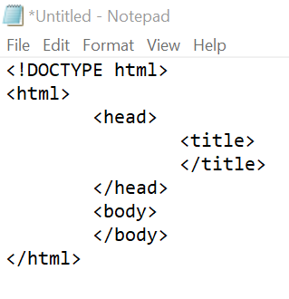
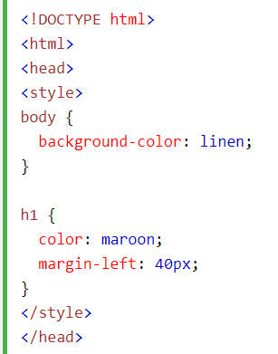
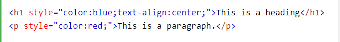
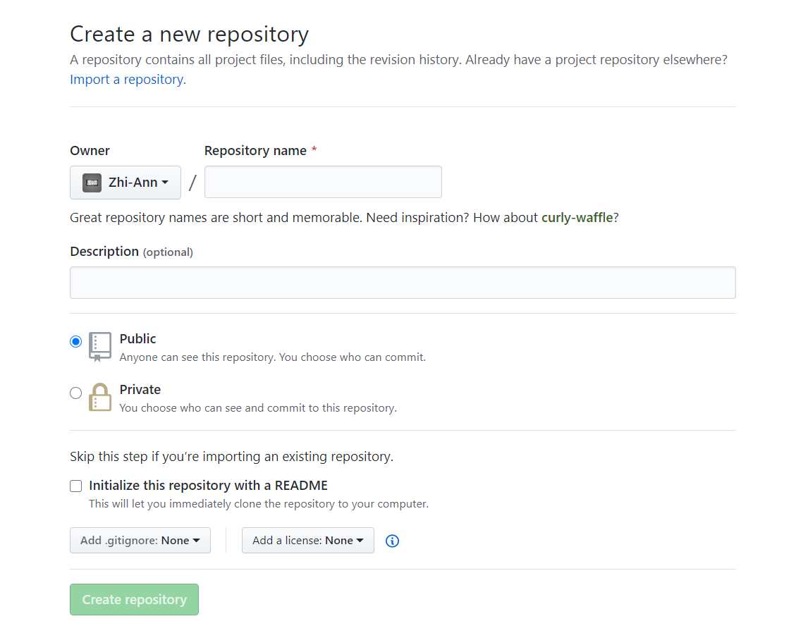
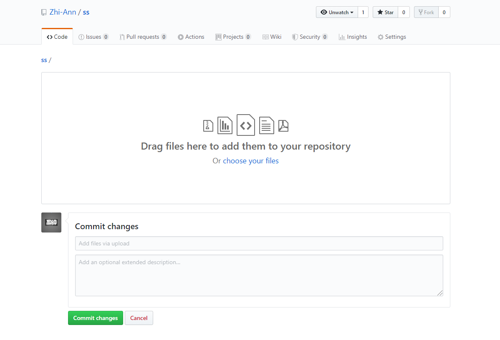
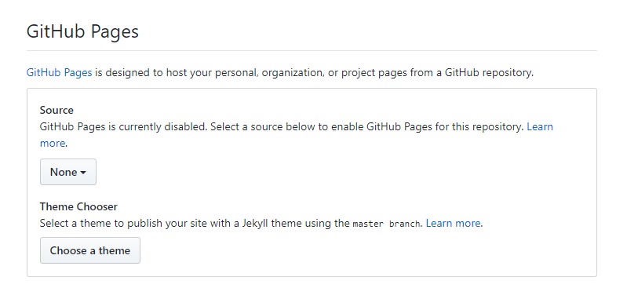

Web Development
Software Used:
- Useful tip for Brackets, press " Ctrl + U " to undo an action.
Programming Language Used:
Introductory
There are many types of Programming Language widely available. In this module, we focused on the use of HTML and CSS. HTML is the shortform for Hypertext Markup Language, it is the standard markup language for documents designed to be displayed in a web browser. CSS is the shortform for Cascading Style Sheets, it is used to define a webpage's visual when viewed by a browser, it aids the design and appearance of a website created by HTML.
Basic Setups
HTML
A basic HTML Website Comprises of 2 major segments; head and body. The head section comprises of information about the page while the body contains the actual contents. Do note that most tags have a opening and closing tag for a command to be made valid.
Here are some fundamental tags for HTML:
"!DOCTYPE html" declaration defines this document to be HTML
"html" element is the root element of an HTML page
"head" element contains meta information about the document
"title" element specifies a title for the document
"body" element contains the visible page content
Here are some useful tags:
The "p" tag indicates a paragraph
The "h1" tag indicates a header
(header tags has h1, h2, h3, h4, h5, h6 where the largest header is h1 and the smallest is h6)
The "br" tag breaks a text to seperate lines
The "u" tag underlines the words within the tag
The "b" tag bolds a text
The "hr" tag seperate the webpage with a horizontal line
The "i" tag changes the text form to italics
For more important basic tags, you can find it on www.w3schools.com which has tutorials and references on web development languages such as HTML, CSS.
Here is a short tutorial on how to create a basic webpage using HTML
CSS
CSS uses a opening tag " { " and a closing tag" } " where the information in between this two tags in a stylesheet defines the HTML page. It can divide a webpage into sectors by using the tag " div id="ss" " and closing with " /div ".
There are 3 ways to add CSS into a HTMl document
External CSS
To link a exeternal style sheet to a HTML page, this tag
" link rel="stylesheet" type="text/css" href="style.css" " has to be added inside the head section of the HTML page, where href should contain the information of the stylesheet used.
An external style sheet can be written in any text editor and must be saved with a .css extension. The external .css file should not contain any HTML tags.
*Note*
To change a file format, search "file explorer options" on your computer search bar, click on the "view" tab and uncheck "Hide extensions for known file type". To rename file type, select your file and click "rename" to change the file extension e.g. from file.txt to file.html .
Internal CSS
internal style is defined inside the "style" element, inside the head section.
Inline CSS
An inline style may be used to apply a unique style for a single element by adding the "style" attribute to the relevant element. The style attribute can contain any CSS property.
Here is a short tutorial on how to link CSS to a HTML webpage
Publish your website
To enable your website to be viewed by the public. You can upload your repository onto www.github.com . After signing in to your account, click on your user icon on the top right hand corner, click on "your repositories" and select "New". 
Once you are done filling in the details, click "create repository".When the repository is created, click on "Code" and select "upload an exisitng file" which will bring you to this page.
Drag and drop all your files that you had create to the space and once you are done, click on "commit changes" to finish. To enable the webpage link, click on "settings" and scroll all the way down until you reach the section called "Github Pages". Change the source from "None" to "Master Branch" and the link to your website will be made available.
